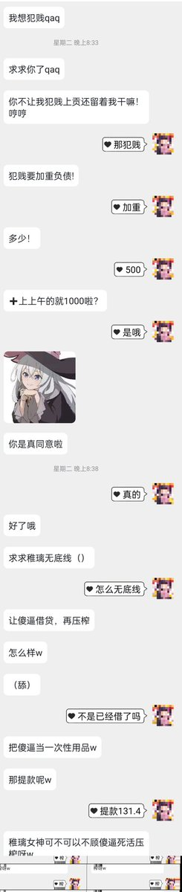
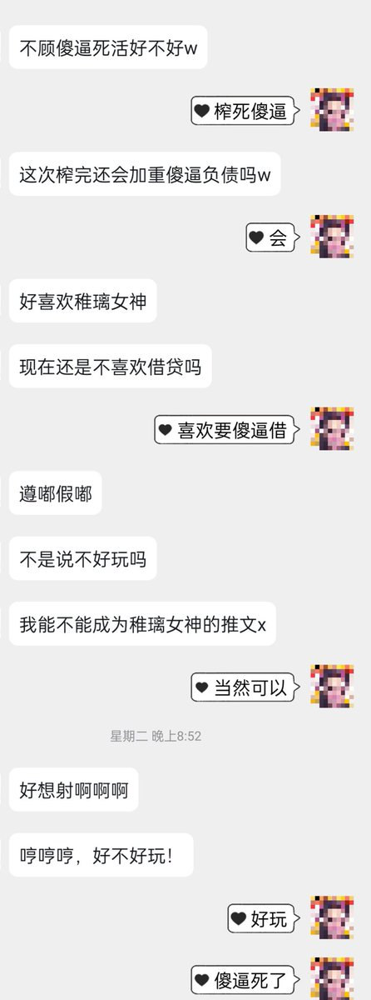
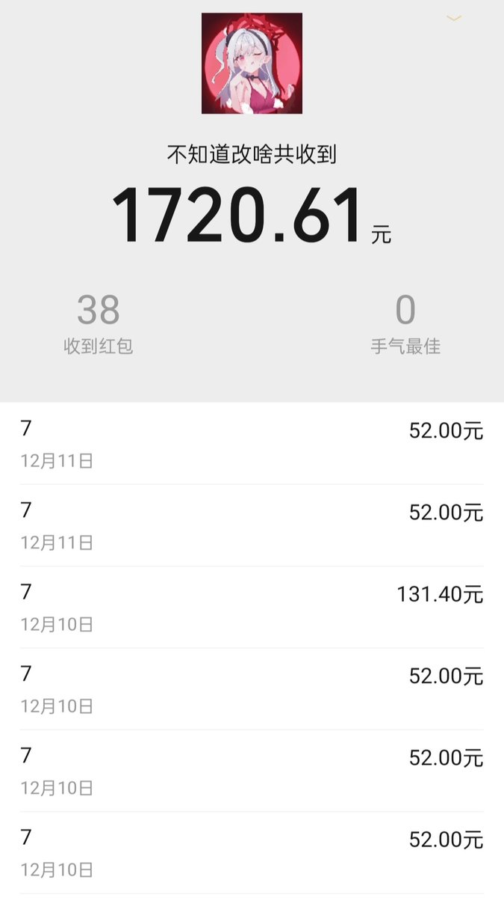

电波系天使偶像💖魔女小姐参上
@xuemingjiai
RT @zhiliwww: 傻逼到什么地步才会一直追着送钱上贡啊？甚至被清空之后还想去主动借贷白给
不过这也是我遇见过最傻逼的了，恐怕以后也没人能够挑战他的名次
一些人喜欢看上贡的内容，大概就是喜欢看人犯蠢 想知道…



营业の文媛♡稚璃（本我形态）
@zhiliwww
傻逼到什么地步才会一直追着送钱上贡啊？甚至被清空之后还想去主动借贷白给
不过这也是我遇见过最傻逼的了，恐怕以后也没人能够挑战他的名次
一些人喜欢看上贡的内容，大概就是喜欢看人犯蠢 想知道… https://t.co/Q33SXBTr8e